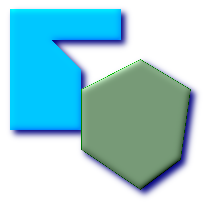
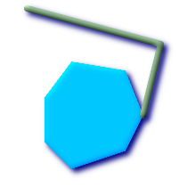
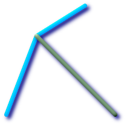

名前
ST_Touches —
ジオメトリが共通のポイントを少なくとも一つ持ち，内部でインタセクトしない場合に，TRUEを返します．
概要
boolean ST_Touches(geometry
g1, geometry
g2);
説明
g1とg2の共通部分のポイントがg1とg2の境界の結合上にある場合は，TRUEを返します．
ST_Touchesは，Area/Area, Line/Line, Line/Area, Point/Area, Point/Lineの全てを受け付けますが，Point/Pointは受け付けません．
数学用語で言うと，この述語は次のように表現されます．
TODO: Insert appropriate MathML markup here or use a gif. Simple HTML markup does not work well in both IE and Firefox.

二つのジオメトリに対して許されるDE-9IMは次のようになります．
FT*******
F**T*****
F***T****
![[重要項目]](images/important.png) | |
|
![[注意]](images/note.png) | |
この関数は，ジオメトリ上で使用可能なインデクスを使うバウンディングボックス比較を自動的に取り込みます．インデクスの使用を避けるには， |
 このメソッドは OpenGIS Simple Features Implementation Specification for SQL 1.1.を実装するものです． s2.1.1.2 // s2.1.13.3
このメソッドは OpenGIS Simple Features Implementation Specification for SQL 1.1.を実装するものです． s2.1.1.2 // s2.1.13.3
このメソッドはSQL/MM仕様の実装です． SQL-MM 3: 5.1.28
例
次に示す図全てで，ST_TouchesはTRUEを返します．

| 
| 
|

| 
| 
|
SELECT ST_Touches('LINESTRING(0 0, 1 1, 0 2)'::geometry, 'POINT(1 1)'::geometry);
st_touches
------------
f
(1 row)
SELECT ST_Touches('LINESTRING(0 0, 1 1, 0 2)'::geometry, 'POINT(0 2)'::geometry);
st_touches
------------
t
(1 row)